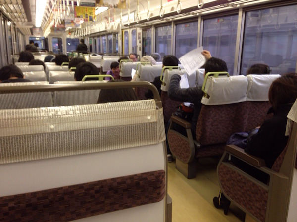

ACCESS
鉄道をご利用の場合
JR神戸（こうべ）線をご利用ください。路線記号[A]が目印です。最寄り駅はJR魚住（うおずみ）駅です。
- 日中時間帯、魚住駅には快速列車（西明石駅以西は普通列車となる）が停車します。
- 京阪神間の移動には新快速列車が便利です。新快速列車をご利用の場合、
- 東からお越しの方は、西明石（にしあかし）駅で新快速から普通列車にお乗り換えください。
- 西からお越しの方は、加古川（かこがわ）駅で新快速から普通列車にお乗り換えください。
- 西明石でのお乗り換えの際、以下のことに十分にご注意ください。
- 以下のような座席配置の普通列車は西明石で折り返してしまいます。

- 以下のような座席配置の普通列車にお乗り換えいただくと、西明石より西に進むことができます。
飛行機をご利用の場合
- 関西国際空港から…JR関西空港駅から関空快速で大阪駅までお越しいただくと、JR神戸線にお乗り換えができます。
- 神戸空港から…ポートライナーで三宮（さんのみや）駅までお越しいただき、JR三ノ宮（さんのみや）駅まで徒歩で移動していただくとJR神戸線にお乗り換えができます。
最寄り駅からのアクセス
明石工業高等専門学校〒674-0084 兵庫県明石市魚住町西岡679-3
- JR魚住駅から徒歩5分
- 改札口を出て右に曲がり、階段を降りて前に伸びる道を直進します。
- 右手にコンクリート造の大きな門と校舎のような建物が見えたらその門をくぐってください。